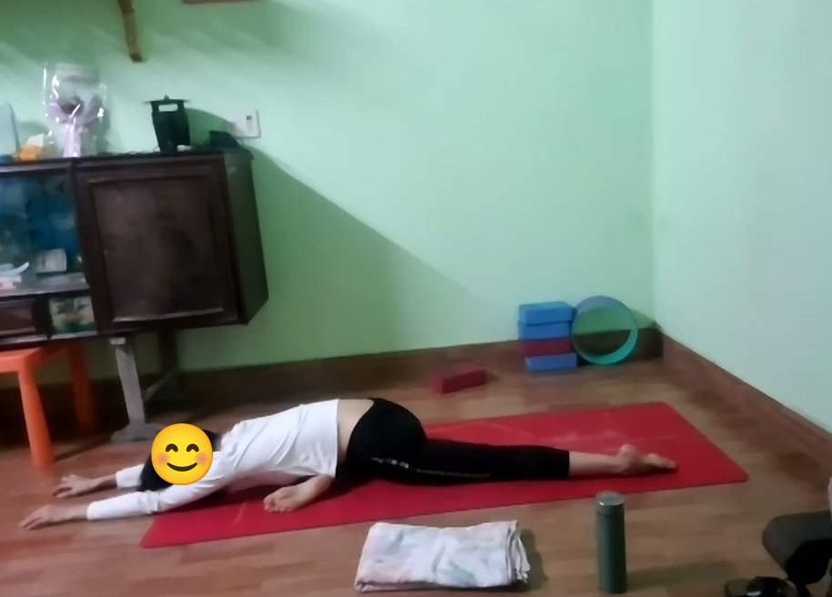
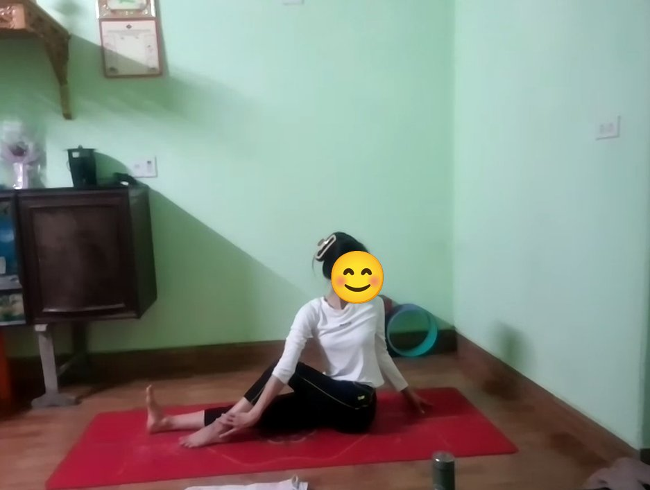
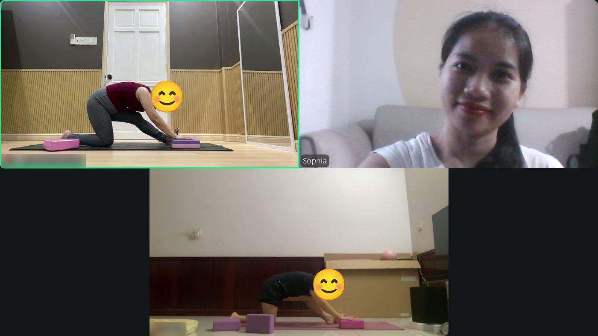

Yoga người lớn · Sức khỏe nam giới
Ứng dụng yoga cân bằng phục hồi cho người gan nhiễm mỡ, bụng bia
Đi khám sức khỏe công ty về, tờ kết quả siêu âm ghi “gan nhiễm mỡ độ 1”. Nhiều anh đọc xong cười: “Ai mà chẳng bị.” Rồi tối đó vẫn đi nhậu.
Anh ba mươi tám tuổi, nhân viên kinh doanh. Cân nặng không quá nhiều, nhưng cái bụng thì rõ. Tuần đi nhậu ba bốn buổi, mỗi buổi “chỉ” năm sáu lon. Sáng nào cũng thấy miệng đắng, người uể oải, trưa ăn xong là buồn ngủ díp mắt.
Anh không đến vì gan. Anh đến vì vợ đăng ký cho hai vợ chồng tập cùng.
Buổi đầu, khi nằm thở bụng, anh nói: “Cô ơi, em không thở xuống bụng được, bụng nó cứng.” Cô bảo anh cứ để tay ở đó. Không cần phồng to. Chỉ cần cảm nhận.
Ba tháng sau, anh mang tờ siêu âm mới đến lớp, chìa ra như một đứa trẻ mang giấy khen về.
Câu chuyện được kể lại từ nhiều học viên có cùng vấn đề, đã đổi chi tiết để giữ riêng tư.
Gan nhiễm mỡ là khi mỡ tích tụ trong tế bào gan nhiều hơn mức bình thường. Trên thế giới, cứ khoảng bốn người lớn thì có một người bị gan nhiễm mỡ không do rượu (Younossi và cộng sự, Hepatology 2016). Ở nam giới Việt Nam, thêm rượu bia vào nữa thì con số còn cao hơn. Tin tốt là gan là cơ quan có khả năng hồi phục rất đáng nể. Ở giai đoạn sớm, khi mình đổi cách sống, mỡ trong gan có thể giảm đi rõ rệt.

- Gan làm gì cho mình
- Bụng bia không chỉ do bia
- Tính lượng cồn
- Ba gốc
- Năm thể
- Hơi thở
- Sáu tư thế
- Chuỗi 15 phút
- Đổi lối sống
- Tám bậc yoga
- Khi nào đi khám
Gan làm gì cho mình
Gan khỏe và gan nhiễm mỡ
Hình minh họa đơn giản. Trên siêu âm, gan nhiễm mỡ thường “sáng” hơn gan bình thường.
Gan là nhà máy lớn nhất trong cơ thể. Nó lọc chất độc, xử lý cồn, giữ đường dự trữ, tạo mật để tiêu hóa mỡ, làm ra nhiều loại protein cho máu. Nó làm việc lặng lẽ, không biết kêu đau. Khi gan đã kêu, thường là đã muộn.
Gan nhiễm mỡ có hai con đường lớn. Một là do rượu bia. Hai là do chuyển hóa: thừa cân, mỡ bụng, đường huyết cao, mỡ máu cao, ít vận động. Từ năm 2023, giới y khoa gọi nhóm thứ hai là bệnh gan nhiễm mỡ liên quan rối loạn chuyển hóa. Ở rất nhiều anh, cả hai con đường cùng lúc.
Ở giai đoạn đầu, mỡ chỉ nằm đó. Nếu tiếp tục, gan có thể bị viêm, rồi xơ hóa, và một số ít người tiến tới xơ gan. Điều quan trọng: giai đoạn sớm có thể quay lại được.
Bụng bia không chỉ do bia
Cái bụng tròn của nhiều anh không chỉ là mỡ dưới da. Phần đáng lo hơn là mỡ nội tạng, nằm sâu bao quanh gan, ruột. Loại mỡ này hoạt động như một tuyến nội tiết, tiết ra chất gây viêm, làm cơ thể kháng insulin. Người châu Á tích mỡ nội tạng sớm hơn, nên dù cân nặng chưa cao, bụng đã là tín hiệu.
Đo vòng bụng
Đứng thẳng, thở ra nhẹ, đo ngang rốn, thước không thít chặt.
Mốc 90 cm cho nam giới châu Á theo Liên đoàn Đái tháo đường Quốc tế (IDF 2006).
🍺
Cồn
Gan ưu tiên xử lý cồn trước, mỡ để sau. Một lon bia còn có khoảng 140 calo.
🥤
Đường, nước ngọt
Đường fructose trong nước ngọt, trà sữa đi thẳng về gan, dễ chuyển thành mỡ.
🍖
Đồ nhắm
Lòng, nem chua rán, chân gà chiên. Bữa nhậu nhiều calo hơn bữa cơm.
🌙
Ăn khuya, ngủ muộn
Ăn lúc cơ thể chuẩn bị nghỉ. Thiếu ngủ làm thèm đồ ngọt, đồ béo hôm sau.
🪑
Ngồi nhiều
Cơ không dùng đường thì đường đi vào gan.
😣
Căng thẳng
Hormone căng thẳng cortisol thúc đẩy mỡ tích ở bụng. Căng thẳng còn kéo theo một lon bia “cho nhẹ đầu”.
Một tuần mình uống bao nhiêu?
Bộ Y tế dùng “đơn vị cồn”: một đơn vị là 10 gam cồn nguyên chất. Ô dưới đây giúp mình nhìn con số thật. Tổ chức Y tế Thế giới đã nói rõ năm 2023: không có mức uống rượu bia nào là an toàn cho sức khỏe. Càng ít càng tốt.
Tuần vừa rồi
Tính theo bia 5 độ, vang 13 độ, rượu 40 độ. Rượu tự nấu thường nặng hơn. Năng lượng tính gần đúng.
Ba gốc của yoga cân bằng phục hồi
- 🌬️Hơi thở là gốc. Gan nằm ngay dưới cơ hoành bên phải. Mỗi hơi thở sâu, cơ hoành hạ xuống, nhẹ nhàng ép và thả vùng gan như một bàn tay xoa bóp. Thở chậm còn làm dịu căng thẳng, thứ hay kéo mình tới lon bia.
- 🌿Cột sống là trọng tâm. Ngồi khom, bụng bị gập lại, cơ hoành khó chuyển động. Lưng dài ra thì bụng có chỗ, hơi thở có chỗ.
- ⚖️Cân bằng là hướng đi. Không nhịn đói, không bỏ hẳn mọi thứ trong một đêm. Giảm từ từ năm đến mười phần trăm cân nặng là đủ để gan thay đổi.
Lá gan trên cả năm thể
Yoga nhìn con người qua năm lớp (bài Năm thể của con người kể kỹ hơn).
Thân
Mỡ bụng, men gan tăng, đường huyết, mỡ máu cao. Mệt, nặng người, khó tiêu.
Khí
Bụng cứng, thở ngực. Sau bữa nhậu, hơi thở nặng nề cả đêm.
Tâm
Uống để quên mệt, quên buồn. Y học cổ truyền phương Đông vẫn gắn gan với sự nóng giận.
Trí
“Không uống thì mất lòng khách.” “Đàn ông phải biết uống.”
Tinh thần
Vui chỉ còn gắn với bàn nhậu. Quên những niềm vui không cần cồn.
Phần tâm và trí là chỗ cô thấy nhiều anh vướng nhất. Bỏ bia không khó bằng bỏ cái ý nghĩ rằng mình cần bia để vui, để làm ăn, để được chấp nhận.
Hơi thở cho lá gan
Nằm ngửa co gối, tay phải đặt lên sườn phải phía dưới, chỗ lá gan nằm. Hít vào, cảm nhận sườn nở ra dưới bàn tay. Thở ra, sườn thu về. Không cần phồng bụng to. Ai bụng to, bụng cứng thì cứ để tay ở đó, ngày qua ngày bụng sẽ mềm dần.
Cô không dạy các phép thở mạnh, thở nhanh (như Kapalabhati) cho người bụng to, huyết áp cao, mới ăn no. Thở chậm, êm là đủ.
Sáu tư thế đơn giản, đúng chỗ
Không có tư thế nào “đốt mỡ gan” cả. Mỡ gan giảm khi tổng thể cơ thể dùng nhiều năng lượng hơn, ăn hợp lý hơn, cơ bắp nhạy với insulin hơn. Cô chọn những tư thế giúp cơ lớn của chân và mông làm việc, thân mình được vặn nhẹ, bụng mềm ra, và người mới tập cũng làm được.
Ngồi ghế
Utkatasana trên tường 2 phút
Lưng tựa tường, trượt xuống như ngồi ghế vô hình, gối không quá mũi chân. Cơ đùi, cơ mông lớn nhất cơ thể cùng làm việc. Giữ vài hơi, đứng lên, lặp lại.
Chiến binh II
Virabhadrasana II 2 phút
Hai chân mở rộng, gối trước cong. Tay dang ngang. Đứng vững như người đàn ông biết mình đang đứng ở đâu.
Vặn mình ngồi
Ardha Matsyendrasana nhẹ 2 phút
Ngồi thẳng, hít vào dài lưng, thở ra vặn nhẹ sang phải rồi sang trái. Bụng được ép nhẹ và thả. Không vặn khi vừa ăn no.
Rắn hổ mang thấp
Bhujangasana 1 phút
Nằm sấp, nâng ngực nhẹ. Bụng được kéo dài, mở ra.
Châu chấu nhẹ
Salabhasana 1 phút
Nằm sấp, nâng nhẹ ngực và một chân. Cơ lưng, cơ mông làm việc. Bụng chạm đất.
Nằm vặn
Supta Matsyendrasana 3 phút
Nằm ngửa, co gối, thả hai gối sang một bên, mắt nhìn bên kia. Thở vào sườn trên. Đổi bên.
Cô hay để ý mấy điều. Không tập sau bữa nhậu, không tập khi còn say. Không vặn, không gập bụng khi vừa ăn no. Người huyết áp cao không cúi đầu thấp lâu, không nín thở. Ai bụng to thì mở rộng hai chân khi gập người để bụng có chỗ. Đau vùng hạ sườn phải khi tập thì dừng lại và đi khám.


Chuỗi 15 phút buổi sáng
Tập trước bữa sáng hoặc trước bữa tối, lúc bụng còn nhẹ. Bấm bắt đầu, nghe tiếng chuông nhỏ thì đổi bước.
Lá gan nhẹ, bụng mềm
- Thở vào sườn phải Nằm co gối, tay trên sườn phải. Hít vào sườn nở, thở ra dài.
- Mèo bò Quỳ bốn điểm, lưng cong võng theo hơi thở.
- Ngồi ghế dựa tường Giữ năm hơi, đứng lên, lặp lại ba lần.
- Chiến binh II bên phải Gối trước cong, tay dang ngang, thở đều.
- Chiến binh II bên trái Đổi bên.
- Vặn mình ngồi Hít vào dài lưng, thở ra vặn. Hai bên.
- Rắn hổ mang thấp Nằm sấp, nâng ngực nhẹ.
- Châu chấu nhẹ Nâng ngực và một chân, đổi chân.
- Nằm vặn Gối thả sang một bên, rồi bên kia.
- Nằm thư giãn Hai tay trên bụng. Thở êm.
Đổi lối sống: phần lớn của việc phục hồi
Giảm cân, gan đổi rõ. Ở Cuba, 293 người viêm gan nhiễm mỡ được theo dõi một năm thay đổi lối sống. Người giảm được từ mười phần trăm cân nặng trở lên: khoảng chín trên mười người hết viêm gan nhiễm mỡ, gần một nửa thấy xơ hóa lùi lại (Vilar-Gomez và cộng sự, Gastroenterology 2015). Giảm năm đến bảy phần trăm cũng đã có lợi.
Vận động có ích dù cân chưa giảm. Một phân tích gộp cho thấy tập luyện đều đặn làm giảm mỡ gan ngay cả khi cân nặng gần như không đổi (Keating và cộng sự, Journal of Hepatology 2012).
- Sáng dậyUống một cốc nước ấm. Ra ngoài tắm nắng sớm, đi bộ mười lăm phút trước bữa sáng.
- Bữa ănNửa đĩa là rau. Một phần tư là đạm: cá, đậu, trứng, thịt nạc. Một phần tư là tinh bột, ưu tiên gạo lứt, khoai, ngô. Ăn chậm, nhai kỹ, dừng khi no tám phần.
- Nước ngọt, trà sữaBỏ trước tiên. Thay bằng nước lọc, trà xanh không đường. Cà phê đen không đường thì nhiều nghiên cứu thấy có lợi cho gan.
- Rượu biaCó gan nhiễm mỡ thì tốt nhất là dừng hẳn, ít nhất trong vài tháng. Đi tiếp khách, gọi nước. Bạn bè thật sẽ quen.
- Vận độngĐi bộ nhanh, đạp xe, bơi 150 phút mỗi tuần, thêm hai buổi tập cơ. Yoga đều đặn là một phần của lượng vận động ấy.
- Ăn tối và ngủĂn tối trước 7 giờ, không ăn khuya. Ngủ trước 11 giờ. Theo đông y, giờ khuya là giờ gan nghỉ ngơi và hồi phục.
- Thiên nhiên, chân đấtCuối tuần thay bàn nhậu bằng một buổi đi bộ ven hồ, leo núi nhẹ, đi chân đất trên bãi cỏ.
- Suy nghĩViết ra những lý do mình muốn khỏe: con, vợ, bố mẹ, chính mình. Dán ở chỗ dễ thấy. Lý do mạnh thì thói quen tự đổi.
- ThiềnMỗi khi thèm một lon bia để “xả”, thử ngồi thở năm phút trước. Cơn thèm thường qua như một con sóng.
Tám bậc yoga cho lá gan
Giới
Yama
Ahimsa, không làm hại: không làm hại lá gan của chính mình. Brahmacharya, điều độ: trong ăn, trong uống, trong cuộc vui.
Luật
Niyama
Saucha, trong sạch: ăn đồ tươi, uống nước sạch. Tapas, kỷ luật: nói “không” với lon bia thứ nhất, dễ hơn lon thứ năm.
Tư thế
Asana
Cơ lớn làm việc, thân vặn nhẹ, bụng mềm.
Hơi thở
Pranayama
Thở cơ hoành, xoa bóp vùng gan từ bên trong.
Thu giác quan
Pratyahara
Bớt quảng cáo đồ ăn, bớt nhóm chat rủ nhậu.
Tập trung
Dharana
Ăn tỉnh thức: biết mình đang ăn gì, no chưa.
Thiền
Dhyana
Ngồi yên với cơn thèm, nhìn nó đến và đi.
Hòa nhập
Samadhi
Niềm vui trong trẻo không cần chất kích thích.
Ahimsa thường được hiểu là không làm hại người khác. Nhưng người xưa nói nó bắt đầu từ chính mình. Có lần một anh học viên bảo cô: “Em chưa bao giờ nghĩ uống bia là làm hại ai.” Rồi anh im lặng một lúc. “Chắc là làm hại em, và vợ con em.”
Ai muốn đọc thêm có mục Giới và luật trong yoga.
Nghiên cứu về yoga
Yoga và hội chứng chuyển hóa. Một phân tích gộp các thử nghiệm cho thấy yoga giúp giảm vòng eo, huyết áp và một số chỉ số chuyển hóa ở người có hội chứng chuyển hóa (Cramer và cộng sự, European Journal of Preventive Cardiology 2016). Các tác giả lưu ý chất lượng nghiên cứu còn hạn chế.
Riêng về gan nhiễm mỡ, nghiên cứu về yoga còn ít và nhỏ. Cô coi yoga là cánh cửa dễ bước vào: người đang bụng to, ngại phòng gym, ngại chạy bộ, có thể bắt đầu bằng thảm yoga, rồi dần đi bộ, ăn uống khác đi.
Khi nào cần đi khám
Yoga và thay đổi lối sống đi cùng, không thay cho việc khám và chăm sóc của bác sĩ. Người có gan nhiễm mỡ nên được bác sĩ kiểm tra men gan, đường huyết, mỡ máu, viêm gan B, C, và đánh giá độ xơ hóa. Đi khám ngay khi:
- Vàng da, vàng mắt, nước tiểu sẫm màu như nước chè.
- Nôn ra máu, đi ngoài phân đen như bã cà phê: cấp cứu ngay.
- Bụng to nhanh, chân phù, dễ bầm tím, chảy máu chân răng.
- Lú lẫn, ngủ gà, thay đổi tính tình ở người uống rượu nhiều.
- Đau tức hạ sườn phải kéo dài, sụt cân không rõ lý do.
- Người uống rượu nhiều lâu năm muốn dừng: nên hỏi bác sĩ, vì dừng đột ngột có thể gây hội chứng cai nguy hiểm.
Cẩn thận với thuốc “bổ gan”, “mát gan” trôi nổi. Gan phải xử lý cả những thứ ấy.
Lời nhỏ cuối bài
Tờ siêu âm của anh ba tháng sau ghi “gan bình thường”. Anh giảm sáu ký, vòng bụng nhỏ đi tám phân. Anh vẫn đi tiếp khách, nhưng giờ cầm chai nước khoáng. Lúc đầu bạn bè trêu, giờ có hai người trong nhóm cũng cầm nước như anh.
Anh bảo điều anh bất ngờ nhất không phải tờ siêu âm. Mà là buổi sáng thức dậy thấy người nhẹ, miệng không đắng, và muốn chơi với con.
Lá gan biết tha thứ. Chỉ cần mình cho nó cơ hội.
🌿 Muốn có người đi cùng trên hành trình phục hồi?
Sophia Yoga có lớp người lớn trực tiếp, lớp Zoom và lớp kèm 1 kèm 1 (500.000đ / giờ), theo hướng yoga cân bằng phục hồi: hơi thở là gốc, cột sống là trọng tâm, tập vừa sức. Vợ chồng tập cùng nhau là cách nhiều nhà đã bắt đầu. Ai muốn mang yoga đến với các con, có khóa đào tạo HLV Yoga trẻ em.
Đọc thêm cho nam giới: tiểu đêm, tuyến tiền liệt · sức khỏe sinh lý nam · ngáy, ngưng thở khi ngủ · bệnh gút. Thêm: yoga giảm cân, dinh dưỡng theo yoga.
Tài liệu tham khảo
- Younossi Z.M. và cộng sự (2016). Global epidemiology of nonalcoholic fatty liver disease: meta-analytic assessment of prevalence, incidence, and outcomes. Hepatology, 64(1), 73–84.
- Vilar-Gomez E. và cộng sự (2015). Weight loss through lifestyle modification significantly reduces features of nonalcoholic steatohepatitis. Gastroenterology, 149(2), 367–378.
- Keating S.E. và cộng sự (2012). Exercise and non-alcoholic fatty liver disease: a systematic review and meta-analysis. Journal of Hepatology, 57(1), 157–166.
- Cramer H. và cộng sự (2016). A systematic review and meta-analysis of yoga for metabolic syndrome. European Journal of Preventive Cardiology, 23(18), 1982–1993.
- International Diabetes Federation (2006). The IDF consensus worldwide definition of the metabolic syndrome.
- Tổ chức Y tế Thế giới, Văn phòng châu Âu (2023). No level of alcohol consumption is safe for our health. Tuyên bố ngày 4/1/2023.
- Patañjali. Yoga Sutra, chương II (Yama, Niyama, II.29–45).
Ảnh trong bài là ảnh thật từ các buổi tập của Sophia Yoga, mặt học viên đã được che. Câu chuyện là minh họa, ghép từ nhiều học viên. Bài viết chia sẻ kiến thức và kinh nghiệm tập luyện, không thay cho lời khuyên và chăm sóc của bác sĩ.